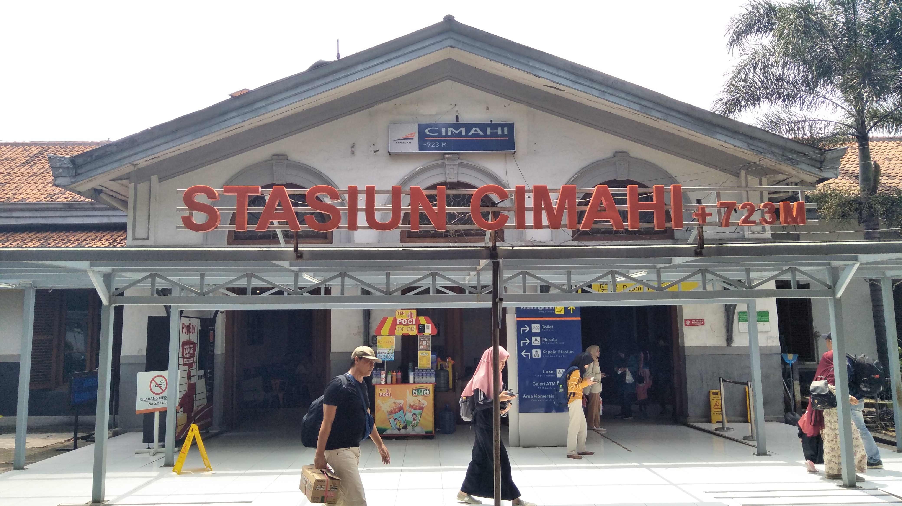

Stasiun Cimahi (CMI) adalah stasiun kereta api kelas I yang terletak di Baros, Cimahi Tengah, Cimahi. Stasiun yang terletak pada ketinggian +723 meter ini termasuk dalam Daerah Operasi II Bandung. Tak jauh dari stasiun ini terdapat Rumah Sakit Tk. II Dustira, Gereja Katolik Santo Ignatius, dan SMP Negeri 2 Cimahi.

Cimahi is a city on the West Java Province.
West Java Province.
You can reach Cimahi station from all over the world.